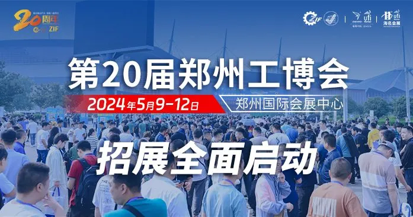

再启新程！2024第20届郑州工博会将于5月9-12日盛大启幕
首页 / 再启新程！2024第20届郑州工博会将于5月9-12日盛大启幕以创新激发活力 助推制造业高质量发展
党的二十大报告指出，“高质量发展是全面建设社会主义现代化国家的首要任务”“坚持把发展经济的着力点放在实体经济上”。制造业是实体经济的主体，是我国经济高质量发展的重中之重，必须将其摆在更加突出的位置。而“创新是引领发展的第一动力，是建设现代化经济体系的战略支撑”，我们必须以创新引领制造业高质量发展。
近年来，河南省全面贯彻新发展理念，主动融入新发展格局，扎实推进创新驱动发展战略，抢抓新机遇，抢拼新赛道，把制造业高质量发展作为主攻方向，大力实施换道领跑战略，加快构建“以未来产业为先导、新兴产业为支柱、传统产业为基础”的先进制造业体系。到2025年，河南省传统产业基本实现高端化、智能化、绿色化发展，跨入新兴与未来产业“新赛道”。
郑州工博会
历经20载，新起点新高度
2024ZIF
郑州工博会作为中西部工业旗舰大展，是中西部地区极具影响力、号召力的行业平台。二十载深厚积淀，站在新起点上，郑州工博会将始终坚守初心，砥砺前行，以行业高度责任感持续打造高品质高成效平台，广泛联动上下游资源，深度链接国内大市场，全力带动行业转型升级，推动制造业高质量发展迈出新的步伐，为构建发展新格局贡献行业力量。
迈向新起点，开启新征程。第20届郑州工业装备博览会（以下简称“郑州工博会”）将于2024年5月9-12日在郑州国际会展中心举办，目前展会招展工作已全面启动。本届展会聚焦行业需求，以20周年为契机，将在展会规划、体验、服务等方面全新升级，进一步提升展会品质、扩大贸易成效、延伸服务价值，将充分发挥作为“企业新品发布、品牌传播、商贸对接及中西部工业会展首要平台”的独特展会价值，为行业发展持续赋能。

2024郑州工博会设立机床展、激光钣金展、工业自动化展、机器人展、工业互联网展、五金机电展等六大主题展，展会规模近70000平方米，2500家业内知名企业参展，集中展示先进制造装备、整体解决方案、柔性制造单元、智能制造系统、数字化工厂等产业链创新技术，预计将吸引70,000专业买家参观。
2024ZIF
内容升级
顺应行业发展，满足市场需求，将进一步扩大展商规模，邀请行业有影响力品牌、高质量企业参展，品牌阵容将更加强大，国际品牌、国产精品同台竞技，发布创新产品、展示最前沿的技术应用案例，助推制造业全面升级。
营销升级
展会建立“线下精准邀约+线上海量覆盖”的立体化推广传播体系。持续性打造粉丝量庞大且精准的展会官方自有媒体平台（公众号、抖音号、视频号、头条号等），依托振威集团百万级数据库资源，投入大量广告费，充分保障展会信息的精准、快速、高效传播，同时建立起与参展商、行业商协会、媒体等协同传播、共同邀约的成熟合作机制，以及整合100+主流媒体以及行业知名媒体资源，扩大企业品牌影响力。
买家升级
托郑州工博会强大的数据库资源，优选高契合度人群画像，精准挖掘潜在观众；深入中西部地区产业集聚地、园区、市场，重点区域全面覆盖，深度挖掘观众需求；同时300+社群实时互动，提供精准的采购贸易配对信息，并与现场举办采购对接会，全面保障展会现场人气和成效。
活动升级
展会将进一步加大力度，策划打造满足企业迫切需要、引领行业升级发展的各类主题论坛会议，整合行业头部资源，围绕产业核心需求及热点话题，丰富展会内容，提升展会体验，引领产业发展。
·“行业发展高峰论坛”探索新业态，共享新机遇
·“专业研讨会”紧跟行业趋势，拓寻行业发展路径
·“新产品新技术发布会”新品集中发布，掌握最新商机
·“精准贸易对接会”促进采购对接，实现专场匹配
中部工业采购节
郑州工博会现场将继续举办“中部工业采购节”，以及举办多场精准应对行业的采购对接会，预先匹配采购与供应需求，搭建“一对多，多对一”的高效供需匹配平台，同时设立购机补贴1000-5000元，全面助力现场成交。
砥砺前行二十载，郑州工博会规模不断扩大，影响力持续增强，在行业内引起广泛关注与赞誉，已成长为国内制造业领域极具影响力的高端平台和品质强展。在制造业的蓬勃发展的背景下，呈现出旺盛的生命力，2024郑州工博会将继续将继续肩负使命，夯实展会成效，塑造多维价值，助力企业在多变的环境中直面挑战，持续为行业寻求更大发展机遇，全力以赴提振产业，为行业发展蓄势赋能。
即刻预定展位，拓展更多商机 ，2024年5月相聚郑州，豫见智造！0371-86680231 15038392685